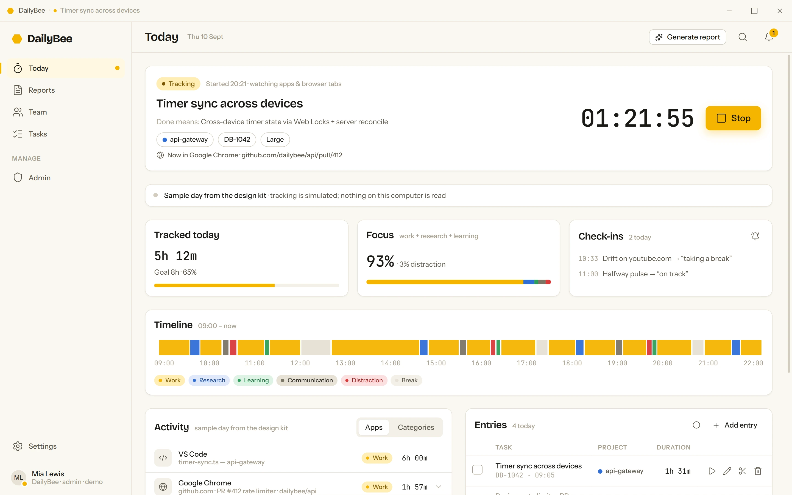
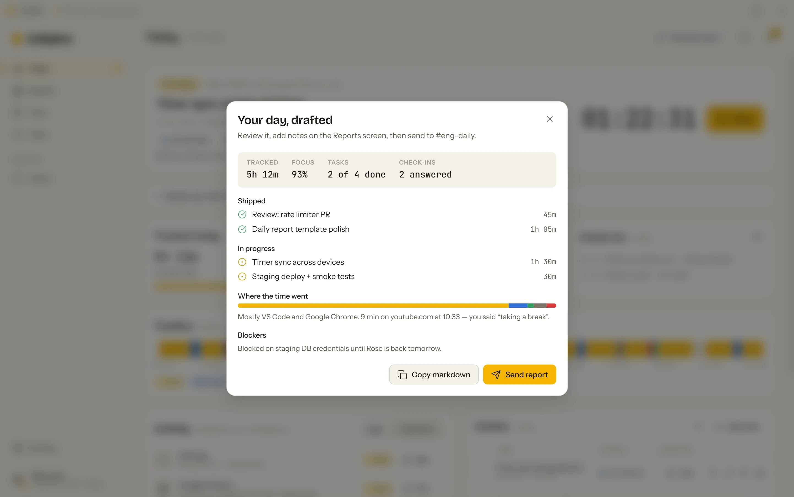
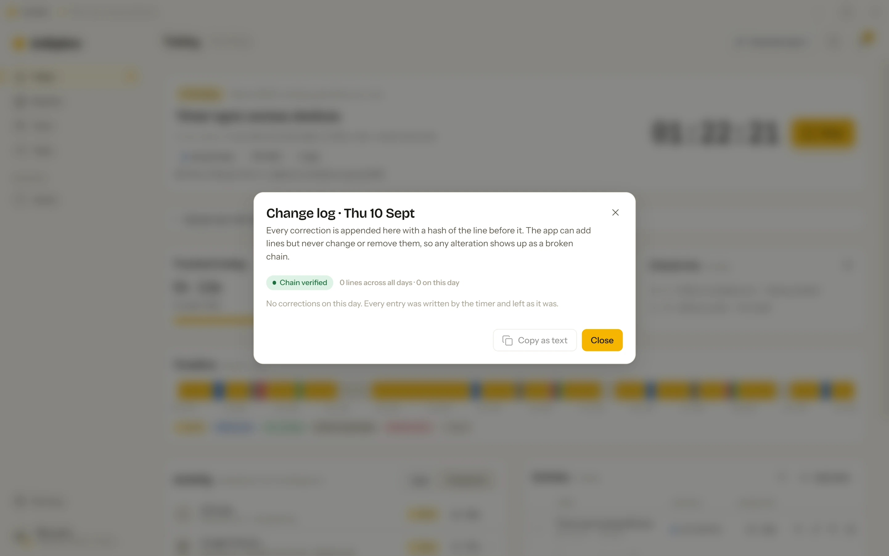
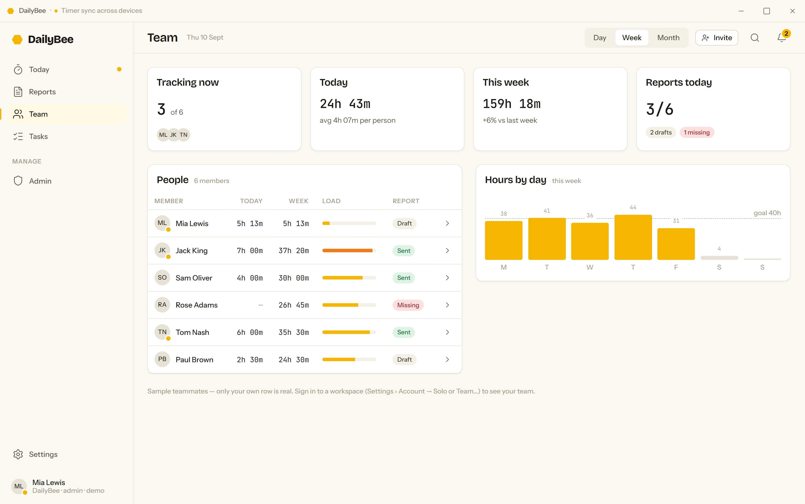
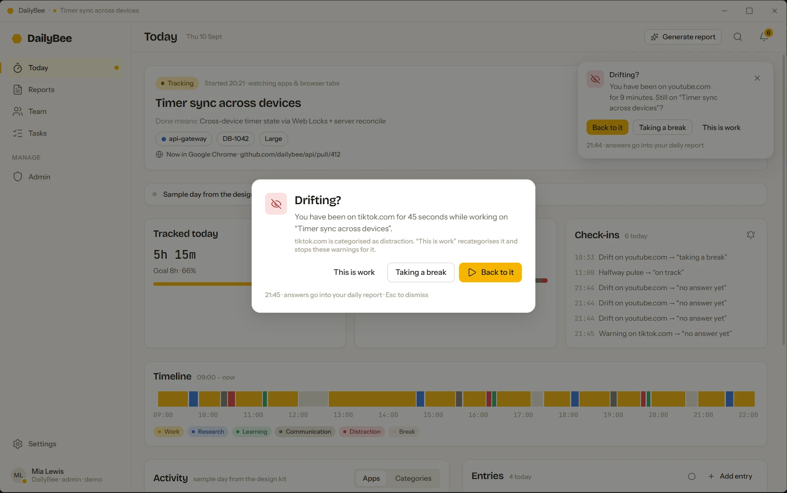

One-click tracking
Start from the app, the tray, a global shortcut or a git commit. Idle, lock and sleep pause the timer, and when you come back DailyBee asks what to do with the time away.
DailyBee is a developer time tracker that runs on your own machine. It keeps a timer per task, watches which app and browser tab is in front, pulls you back when you drift, and turns the day into a report you can correct by hand and send to your team. See where the hours go, and get more of them back.
Windows, macOS and Linux. Free and open source: build it from the code in a few minutes. No account, no card. Nothing leaves your computer unless you say so.
Start from the app, the tray, a global shortcut or a git commit. Idle, lock and sleep pause the timer, and when you come back DailyBee asks what to do with the time away.
Apps and browser pages sorted into Work, Research, Learning, Communication and Distraction. A timeline, a focus percentage and a quiet check-in when you drift.
Edit, split, delete or add entries. Every change lands in an append-only, hash-chained log, and corrected entries carry a badge.
Entries, activity and check-ins become a daily report. Send it to Slack or email, copy it as Markdown, and look back at any day or week.
Sizes from Trivial to Epic, logged time against the estimate, priorities, a board, and weekly budgets per project.
A local profile with a password, or a workspace on a server you run, where leads see team and admin views built from aggregates only.
Every screenshot below is the sample day that ships with the app, captured from the real thing.
Pick a task, say what done looks like, and get on with the work. DailyBee counts active time only and names what you are doing.
Generate report turns entries, activity and check-in answers into a draft. Read it, fix a line, send it.

Forgot to start the timer, or stopped it late? Fix the entry. The change is recorded, not hidden.

Optional. A workspace lives on a server you run; the desktop app only ever sends aggregates to it.

Open a distraction site in the middle of a task and DailyBee notices. It interrupts, briefly, and asks whether you meant to.

A small model of the app's core loop, running in your browser. Time runs 60× faster, the activity is invented, and nothing on your computer is read.
Interactive demo with sample data. It runs in your browser and tracks nothing.
Per-page addresses and window titles are the most revealing data a tracker holds. DailyBee keeps them on the device, always. What a team ever sees is a category and a duration.
The whole thing is public: the desktop app, the sync API, the tracker, the design system and the deployment files. Build it in a few minutes or download a release.
Repository link not set yet. Put the public address in landing/config.js and every GitHub link on this site points there.
Electron + React + TypeScript desktop app, a tRPC sync API with Postgres, a pure-TypeScript tracker package, the design kit, Docker Compose for the team server, and a signed release pipeline on GitHub Actions.
Licence: see the repository. Contributions are welcome; typecheck and tests must pass, and the design kit is the reference for anything visual.
# Node.js 22 or newer, git
git clone <repository> daily-bee
cd daily-bee
corepack enable # once; makes the pinned pnpm available
pnpm install
pnpm dev # run it with real tracking
pnpm package # build the installer for this platformInstaller or zip. UI Automation reads titles and the address bar; nothing to install.
DailyBee-Setup-0.1.0.exedmg. Asks for Accessibility, Automation and Screen Recording on first run.
DailyBee-0.1.0.dmgAppImage or deb. X11 with xdotool; on Wayland the timer and reports work, app capture does not.
DailyBee-0.1.0.AppImageBuild DailyBee from the code in a few minutes. The guide walks through building it, installing it and the first day of tracking.